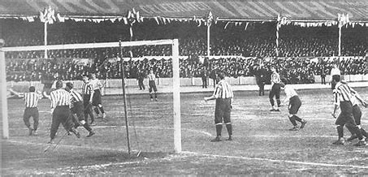

La Serie A, come la conosciamo oggi, nasce nel 1929 grazie a una riforma che la FIGC, sotto la guida di Arpinati, introduce per dare maggiore struttura al campionato italiano. Prima di allora, esistevano diversi sistemi di competizione, spesso con gironi regionali o interregionali.
Età dell'oro e formazione della Serie A:
1926-1929: Divisione Nazionale:
Si introduce la Divisione Nazionale, che rappresenta un primo tentativo di campionato nazionale a girone unico.
1929: nascita della Serie A:
La riforma definitiva crea la Serie A come girone unico, con 18 squadre, e stabilisce un sistema di promozione e retrocessione con la Serie B.
Priorità ai gironi:
Il sistema di gironi regionali e interregionali viene mantenuto, con le divisioni inferiori che forniscono un trampolino per le squadre che vogliono raggiungere la Serie A.
Cambiamenti e evoluzioni:
Formato:
Nel corso degli anni, il formato della Serie A ha subito alcune modifiche, come il passaggio a 18 squadre e la riorganizzazione dei gironi.
Scudetto e stelle:
Dal 1924 è stato introdotto lo scudetto come distintivo per la squadra vincitrice del campionato. Nel 1958, è stata poi concessa la possibilità di apporre stelle sulla maglia per ogni dieci scudetti vinti.
Importanza del calcio:
La Serie A diventa sempre più importante, con un impatto sociale ed economico che va oltre il semplice aspetto sportivo.
Origini del calcio italiano:
Genoa:
La squadra più antica d'Italia, il Genoa Cricket and Football Club, è stata fondata nel 1893 ed è tra le squadre più antiche al mondo.
Prima competizione:
Il primo campionato italiano di calcio si è svolto nel 1898, con il Genoa che ha vinto il titolo.